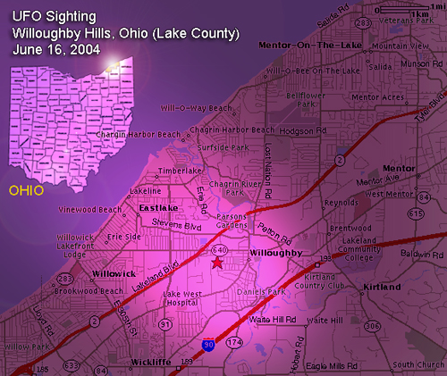

Subject: UFO Sighting
Location: WilloughbyHills, Ohio (Lake County)
Date: June 16, 2004
Summary
On Wednesday, June 16, 2004, a veteranDeputy Sheriff in Lake County, Ohio and his wife observed an unusual triangular-shapedaircraft from two separate vantage points at nearly the same time. Thehusband and wife couple discussed their experience in detail the followingafternoon.
The wife reported sighting the bizarreaircraft at a closer vantage point and with more dramatic detail, spottingthis unusual object while driving east along State Route 91 near the StateRoute 91 and 306 intersections near Willoughby Hills, Ohio (Lake County).
Deputy Sheriff Kevin Coleman soughtto report the two sightings to the National UFO Center, advising of thesituation in a comprehensive summary on the N.U.F.O.R.C.'s "online reportform." His report and comments containing other details of the sightingare enclosed below.
Separately, the witness was also contactedby telephone on Wednesday, June 23, 2004 for additional follow-up.
Coleman advised that he holds a positionas Deputy Sheriff with the Lake County Sheriff's Department, and will seehis 11th year in service this coming October. He was promoted to detectivewithin 3-years of duty and has investigated all types of crimes and isa veteran SWAT member. He has also investigated plane crashes in vicinity.
Deputy Sheriff Coleman reports thatthe high-flying object he saw traveling from west to east last Wednesday,June 16 was nothing he was familiar with. The object was apparently higherthan a jet airliner that was also seen flying through the area.
Most interestingly, according to thewitness, was how this unidentified object seemed to be self-luminous.
"I was concerned to find out if thisobject was just reflecting sunlight. But after studying this for the lengthof time that I could, it did not seem to change in intensity or seem tobe reflecting light in any way," he said. "It had an angular shape to it,giving me the impression that it was self luminous. In my opinion, it wasself- luminous.
"It was definitely traveling in theeasterly direction of the Perry Nuclear plant when I first saw it," Colemansaid. "Then this thing seemed to slow down and get bigger. The object wasjust 'gone,' not accelerating or flew off somewhere, it simply disappeared.
"I had a good visual on it, there wasno question about it moving off."
When asked further about its departuremethod or how sure he was of this observation, Coleman affirmed his certaintythat the object did not depart in a conventional sense.
"This was, without question, the hardestpart for me to explain about the situation� was how it was gone. I meanit was just gone."
Coleman said that the duration of hissighting was between 10 to 20 seconds from the time he first noticed theobject traveling from west to east and increasing in apparent size to thepoint of its apparent disappearance.
The near-simultaneous sighting by Coleman'swife of a boomerang-shaped aircraft hovering only 100-feet from the groundwas far more dramatic, according to Coleman, and the duration of that sightingwas over 1-minute and discontinued due to traffic circumstances.
First viewed to her right and in a northerlydirection, Coleman's wife thought the object was some type of militaryaircraft that was possibly in a holding pattern.
"My wife thought this plane was somehowrelated to the events of September 11th, or even in some kind of investigationrelated to 911," Coleman said.
"What made this really interesting isthat she was looking out her window to her right, which would be in a northerlydirection which would have generally been the same direction as my sighting,"he said.
When asked if he notified any otherpolice agencies of the sighting, he said that he did not, only filing thereport to NUFORC.
Coleman was asked what his thoughtswere about bringing this situation to the attention of Homeland Securitypersonnel, or if he feels there is any need for concern due to the uncertainnature of the UFO and its June 16 proximity to the Perry Nuclear Powerstation.
"The concept of a huge, hovering, abnormalaircraft doesn't register with us to take action on. I don't know whatthis thing was, but it was far outside the scope of our routine trainingor duty. This did not seem to be an actionable situation. What I saw wasnot traditional."
When Deputy Sheriff Coleman was askedif he had any objection to his name being listed in this report, he said:"I have no objection to my name being used. This is a subject that is nota hobby to me, my interest in this is simply reporting the truth aboutthis matter. I believe I have been affected by this and nobody has givenme a reasonable explanation for it."
COMMENT
The Perry Nuclear Power Plant is situatedon the Lake Erie shore about 35 miles northeast of Cleveland and between8 to 10-miles northeast of the June 16th UFO sighting location. On June22 it was announced that the power station will undergo stepped-up scrutinydue to equipment breakdowns and other issues. The plant had been shut downon May 21 due to equipment malfunction, several weeks before the UFO sighting.
In March of 1988 a dramatic UFO sightingtook place at the northern-most point of Route 91 (known as the EastlakeUFO Case) where Coast Guard officers and civilian witnesses watched a UFOover Lake Erie. Several smaller objects were alleged to have advanced fromthe large UFO over the lake and one smaller UFO was seen near the PerryNuclear Power Plant.
Thanks to Peter Davenport, N.U.F.O.R.C.,and Painesville, Ohio researcher Dan Wilson.
Filed,
June 23, 2004
Kenny Young
--
UFO Research
https://kenny.anomalyresponse.com
Cincinnati UFO Hotline (859) 801-6767
NUFORC Report
Occurred : 6/16/2004(Entered as : 06/16/2004)
Reported: 6/17/200410:04:53 PM 22:04
Posted: 6/18/2004
Location: WilloughbyHills, OH
Shape: Triangle
Duration:1 minute
Triangle object,multiple witnesses, 100 feet from
ground. Hoveringover wooded area
Some briefbut much needed history behind this sighting is needed before writing thisreport to you. My wife is as un-likely a person, in my mind, to discussUFO sightings as I've ever met. We were sitting on our back deck just talkingabout our work days the night before when we stumbled upon a dualsighting, hers much better than mine but ironic to say the least.
I am a veteran((law enforcement officer in Lake County, Ohio)) (20 miles east of Clevelandon Lake Erie) and in good standing within. I'll tell you the story in achronological order as it occurred to me and how it unfolded to me as well.To begin, this is not the first sighting I've had but the first in whichmy wife and I saw something together. We were apart when it occurred andwe did not have the opportunity to talk about it when it happened. Thisis, however, my first report I've ever filed with any agency.
I signed up to worka side job for the ((deleted--local community)) and was waiting for therest of the bingo crowd to arrive. I was in the parking lot waiting todirect the patrons into their spots when there was a lull in the trafficcoming in. As you probably know, there has been some pretty violent weatherin the area and I was checking a storm that had blown over (approx. 1745hrs). I first saw a very normal jetliner cruising through the sky at normalheight and speed when I saw an object not familiar to me. I've seen satellites,helicopters, small planes, big planes and weather balloons due to the factwe live 25 miles from Hopkins Airport and have three smaller air fieldsin our patrol zone as well as a nuclear plant 10 miles away (busy withwith activity). I followed the plane for about 15 seconds and lost sightof it after it flew over a cloud deck. I continued to check out the skyto see if threatening weather may be on the way. I then saw this objectin the sky that was much higher than the plane I'd just seen. The speedwas unreal compared to the speed of the plane lower in the sky. I pickedit up much further to the east that I'd seen the plane just seconds prior.At first, I thought it was a satellite because of the small overall lookit had and incredible speed it appeared to be cruising at. I then realizedthat it should have been difficult to see a satellite with it being daylight.After just a second or two, it appeared to get bigger but I realized itwas getting closer. I saw what appeared to be a triangle object that wasstill far away...probably at 10,000 feet, but it was oddly shaped and hadno wings or tail. It looked to be about the size of my thumbnail in thesky. I dismissed it, as I have in the past, and just wondered as to itsorigin. My day ended with nothing else worth noting.
That brings me tomy wife and I talking on the deck. She and I were just talking about everydaythings and our work days the day before, I never talk to her about UFO'sand the like and had pretty much forgotten about my "sighting." My wifethen said something about her needing to call me at 1645 hrs the day Iworked the bingo detail but she didn't because I was probably enroute tothe location or already in the armory (location of the bingo game) wheremy cell phone gets no reception. My wife then told me what happened andsaid she was driving east on I-90 eastbound between SR 91 and SR 306 andsaid, " I saw a triangle thing in the sky, I was so scared cause it lookedlike it was watching something." I asked her what she meant and had stillforgotten about what I'd seen and expected a normal explanation from her.
My wife proceededto tell me that the 'thing' was hovering and not moving. She said thatthe 'thing' made no sound and didn't even bounce in the sky. I asked herif it could of been one of those self-made gliders moving real slow likethey do and she became adamant that this thing was "HUGE, no way." I realizedat this point that she didn't have a clue what she was describing in respectto the relevance to UFO reporting. She's never heard of the triangle phenomenaor even the UFO research being conducted. It was like asking an innocentkid about seeing a crime or describing their first home run....it was completelyhonest and very compelling. I then recalled what I had seen but didn'ttell her because she gets really freaked out about these types of things,you'd see if you ever spoke to her.
I then asked herif she could tell how close it was to the ground. I figured she'd giveme an airplane type altitude. She looked at one of the trees in our neighborhoodand said "about 100 feet above that tree." I then became very curious butskeptical about her sighting and asked her if she was sure it wasn't aplane or something else she'd seen before. I know my wife and it was clearthat she was freaked out because she had went to work and told her friendsshe thought something was going on with "911" and we were being watched.I told her that I would have been the first to know being that I'm in lawenforcement and being next to an international airport and nuclear plant(at least I'd like to think so). My wife then told me that she thoughtit was a plane but she couldn't believe it was a plane because it juststood still in the air. She said that she had to stop looking at it because,as she kept driving, she was losing her field of vision at it, and thoughtshe might wreck if she kept trying to watch it as she kept driving. Shesaid she saw it over a very thick wooded area and thought it was lookingat something. We live only 5 miles from that location. She then arrivedat work and her sighting ended. She described the object as being a trianglewith no wings and no tail. She said it was a darker gray shape with nolights or no other markings worth noting. Anyway, our story and whereaboutscan be easily verified as well as her telling her co-employees about itand our weird way we came about this story. I would have never writtenif she hadn't told me about her story. Times dates and actions during thesighting can be verified. Thank you.